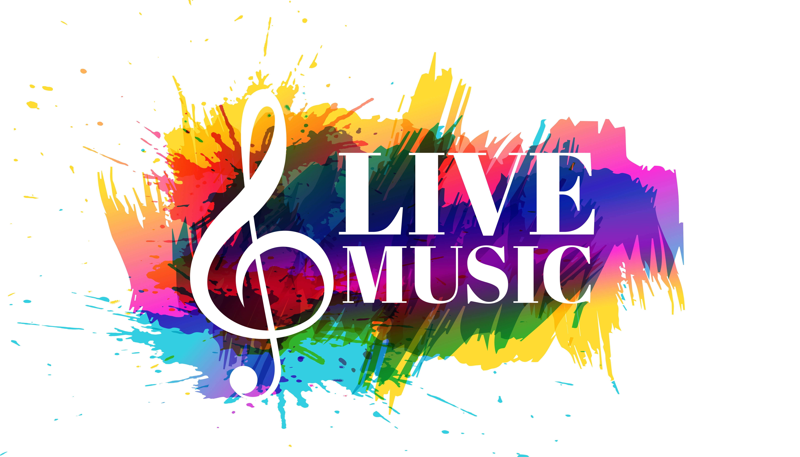

¿Qué es la música?
La música es una de las llamadas Bellas Artes, es decir, a un género artístico, que consiste en conseguir efectos estéticos a través de la manipulación de sonidos vocales o instrumentales, conforme a estándares culturales de ritmo, armonía y melodía.
La música es una de las mayores formas de expresión artística desde tiempos ancestrales. Además constituye el sostén de una gigantesca industria global, ya que en la cultura tienen cabida muy distintos tipos de música, empleados con fines recreativos, ceremoniales, publicitarios o de distinta naturaleza.
Existen muchas y diversas maneras de producir música, algunas muy tradicionales como una orquesta clásica, y otras más contemporáneas como una banda de rock. Sin embargo, el principio que las guía es similar. Cada una pertenece a un contexto específico en cuanto a historia, cultura, valores y consideraciones en torno a lo que es y lo que no es el arte.
Por otro lado, la música se asocia con ciertos aspectos de la mente humana y se considera un estímulo importante para el pensamiento lógico y matemático, la adquisición del lenguaje, el desarrollo psicomotriz y otro vasto rango de actividades sociales y mentales propias del género humano. Por eso se la incluye usualmente en los distintos programas escolares.
Características de la música
La música puede definirse a muy grandes rasgos como una sonoridad organizada, coherente, significativa. Se caracteriza por el empleo de los sonidos (y de los instrumentos para producirlos) con el objetivo de producir una secuencia estéticamente apreciable y significativa.
Como todo sonido, se propaga por el aire (o el medio en el que se inserte) y por lo tanto sus propiedades dependerán de las condiciones en que se ejecute un instrumento.
Posee un ejecutor o intérprete, que es quien emplea el instrumento musical, pero también un compositor, que es quien concibió el lenguaje rítmico y sonoro que será luego interpretado en escena. Ambas personas bien pueden ser la misma.
Se compone de cuatro parámetros fundamentales, que son:
- La altura. Que no es más que la frecuencia de los sonidos producidos, permitiendo clasificarlos en graves o bajos, y agudos o altos, dependiendo de cuántos ciclos completen por segundo sus vibraciones.
- La duración. O sea, el tiempo en que permanecen vibrando o emitiendo un sonido los instrumentos, lo cual está fuertemente relacionado con el ritmo.
- La intensidad. Que es la fuerza con que se produce un sonido, o la energía que contienen sus ondas sonoras, representado por la amplitud de onda de las mismas.
- El timbre.Que es la cualidad del sonido, determinada por la forma de las ondas que lo componen (en el caso de sonidos complejos, como los musicales) y es lo que nos permite distinguir a los distintos instrumentos que suenan en una orquesta.
Elementos de la Música
Los elementos fundamentales de la música suelen ser siempre tres, aunque su concepción y su aplicación concreta bien puede variar de una cultura a otra. Estos elementos son:
|  | Melodía. Se refiere al conjunto de sonidos que, dentro de un mismo ámbito sonoro específico, suenen sucesivamente, o sea, uno después de otro, y que, al percibirse como una unidad completa de sonido, poseen identidad y significado propio. En ella tienen cabida los silencios, sirviendo de pausas en el “discurso” de la melodía, e incluso puede haber dos o más melodías simultáneas, conformando lo que se llama un “contrapunto”. |
| Armonía. En este caso nos referimos al efecto que resulta al combinar dos o más notas musicales, y que puede llegar a ser más o menos grato al oído (más o menos armónico). Un conjunto de sonidos concordantes constituye un acorde, y se reproducen todos al mismo tiempo. | |
| Ritmo. Este elemento es el que vincula a la música con el tiempo, permitiéndole transmitir cierta emoción dependiendo de la vertiginosidad, placidez o las formas con que los anteriores elementos se manifiesten. Estrictamente hablando, el ritmo no es más que los patrones existentes en la sucesión de los sonidos, la combinación específica de figuras y silencios que compone la música. |
Géneros Musicales
Los géneros musicales son clasificaciones más o menos estrictas que sirven para orientarnos a la hora de elegir música, especialmente en ámbitos comerciales o estaciones de radio. Se distinguen entre sí por el uso de algunos instrumentos, por ciertas tendencias estéticas o por cierto contenido histórico que las acompaña.
Actualmente existen muchos y muy variados géneros musicales. Una lista resumida de los más célebres géneros musicales del momento incluye:
| Música Pop | El Blues | El Rap | El Rock |
|---|---|---|---|
| Su nombre proviene de “popular”, en el sentido de “famoso” y no de “tradicional”, y se trata de un género muy comercial de música bailable, en el que se da prioridad a la voz cantante y se acompaña con patrones rítmicos sencillos. Nació en Estados Unidos en la década de 1960 y desde entonces ha dominado las listas de ventas en el mundo entero. | Originalmente consistía en un hombre a solas cantando acompañado con un banjo o una guitarra, allá en el siglo XIX, pero a mediados del siglo XX se reinventó en el Reino Unido y en otros países, siguiendo un patrón repetitivo en una estructura de doce compases. Su nombre significa “melancolía” o “tristeza” y muchos de sus mayores exponentes eran norteamericanos de raza negra. | Otra invención estadounidense, esta vez de a principios de 1970, se trata de un género que combina rima, habla rítmica y jerga, esta última sobre todo de los barrios pobres negros estadounidenses. Vinculada con ciertas tradiciones orales africanas, el rap emplea patrones rítmicos muy pronunciados y monótonos (el beat) | Término empleado para agrupar un conjunto de subgéneros musicales derivados del Rock n’ roll estadounidense de los años 60. Su instrumento de mayor protagonismo es la guitarra eléctrica, acompañada de bajo, batería y otros instrumentos. |
 |
Contacto
Calle Conocida, # 5000Pachuca, Hidalgo